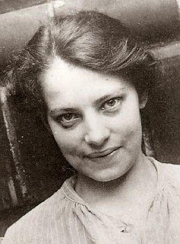
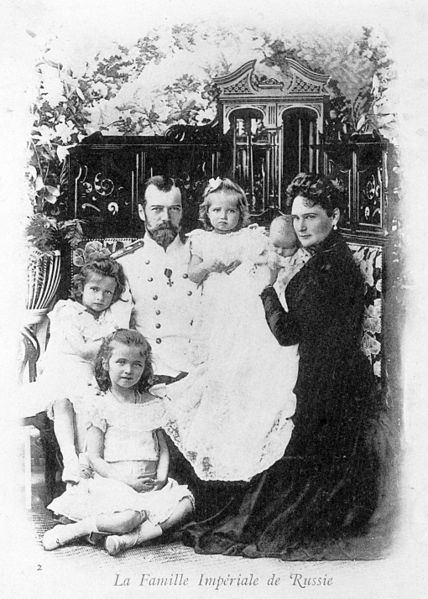
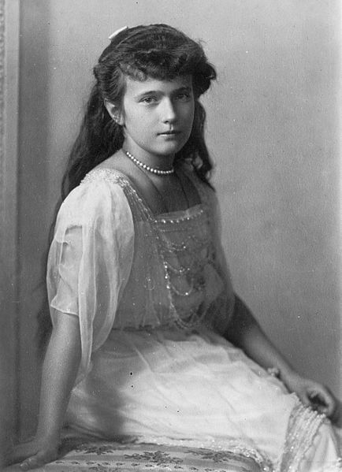

Trên mười quyển sách đã viết ra từ năm 1921 đến 1963, và trên 30 nhân chứng được mời ra trước tòa án Hambourg ngày 15-5-1961, một phim xi nê “Anastasia” do Juliette Greco đóng vai chính xuất hiện trên màn ảnh thế giới năm 1955, chỉ vì một công chúa nước Nga 17 tuổi mà ai cũng tưởng đã bị giết chết rồi nhưng bỗng dưng “sống lại”. Vụ Anastasia đã làm sôi nổi dư luận quốc tế hồi Tiền Chiến và sau Đệ Nhị Thế Chiến, lại được bùng lên, khiến cho mọi người thắc mắc phân vân.

Muốn hiểu rõ sự bí mật ly kỳ này, tôi mời bạn trở lùi lại Lịch sử nước Nga trước đây khoảng 50 năm.
1917, Đệ Nhất thế chiến đã kéo dài 3 năm, quân Nga bại trận. Thừa dịp ấy, ngày 12-3-1917, dân chúng Nga nổi dậy sau khi không chịu đựng được nữa những áp bức dồn dập bằng vũ lực và chính trị hà khắc của Nga Hoàng. Công việc đầu tiên của Đảng cách mạng lên cầm quyền là bắt Hoàng đế Nicolas II và toàn thế gia đình của ông đem giam tại Tsarskoié- Seto. 5 tháng sau, đoàn tù nhân ấy bị dời đến Toboisk, và tháng 5 năm 1918 sau khi chính phủ cách mạng ký hiệp ước ngưng chiến ở Brest-Litovsk với Đức, nhà vua và Hoàng gia lại bị dời một lần nữa đến Ekateri-neubourg, nơi đây tất cả đều bị nhốt dưới một cái hầm trong nhà Thống chế Ipatief.
Thế rồi, đêm 16 tháng 7, gần 1 giờ khuya, bỗng dưng bọn lính gác tù dưới quyền chỉ huy của Yourov thì mở cửa hầm xông vào ngục. Yourovski là viên cảnh sát trưởng rất trung thành với Hoàng đế trước kia, lúc Nga hoàng còn quyền thế, bây giờ chính y cầm súng tiến tới trước mặt Nicolas II, chĩa súng vào ngực ông và bảo:
- Ta được tin bè đảng của mi âm mưu cứu thoát mi ra khỏi ngục tù, nên ta phải bắn mi chết.

Năm 1901 - Vua NicoasII, Vợ Aleandra và 4 người con Olga, Tatiana, Marie, Anastasia đang trên tay của mẹ
Vừa dứt lời, Yourovski nổ cò, Pan! Pan! Pan! Nga hoàng ngã gục xuống chết ngay tại chỗ không kịp nói một lời. Rồi đến Hoàng hậu Alexandra cùng một lượt với thái tử và 4 công chúa: Olga, Tatiana, Marie, Anastasia đều ngã xuống dưới những loạt súng. Một nàng hầu tên là Demidova, bác sĩ Borkine, thầy thuốc riêng của Hoàng gia, và hai tên cận vệ trung tín cũng bị giết luôn. Tất cả 11 xác chết nằm ngổn ngang trên các vũng máu.
1 giờ khuya, bọn lính vứt những xác ấy trên một chiếc xe cam không nhà binh, chở đến một khu rừng gần đó và tưới benzene lên để đốt. Xong họ đổ hết cả đống tro lẫn xương xuống một cái giếng hoang.
Nicolas II, vị hoàng đế độc tài cuối cùng của nước Nga, và tất cả gia quyến, Hoàng hậu và 5 người con, đều bị chết một cách khủng khiếp như thế dưới những miệng súng mà trước kia chính ông đã dùng để đàn áp dân Nga. Dòng họ Romanov đã trả nợ cho Lịch sử trong cuộc thanh toán đẫm máu ấy.
Không ngờ…
Hai năm sau, một tin vặt đăng vài dòng trong các tờ báo hàng ngày ở Berlin, kinh đô nước Đức, mà không ai để ý, lại là thời điểm của một vụ bí mật độc nhất vô nhị trong Lịch sử, làm xôn xao cả hoàn cầu.
Đêm 17.2.1920, một đêm rét buốt mùa Đông ở Berlin, đường phố vắng tanh, một người lính cảnh sát đứng gác cầu Bendler trên con sông Landwehr, bỗng huýt còi liên tiếp ba bốn hồi và người ta nghe tiếng giầy chạy đọp đọp trên cầu. Người ta tưởng cảnh sát đuổi bắt một kẻ bất lương. Nhưng y nhảy xuống sông mặc dầu nước lạnh cóng người, và vớt lên một thiếu nữ chán đời vừa thừa lúc đêm hôm vắng vẻ đã nhảy xuống sông tự tử. Viên cảnh sát gọi xe chở nàng đến một bốt gần đấy. Các người lính gác tại đây vội vàng mượn đồ đàn bà thay cho nàng, lấy ba bốn chiếc mền đắp cho nàng và đốt thêm lò sưởi để cho nàng ấm…Một lúc nàng tỉnh lại, ngơ ngác nhìn ông cò và mấy người lính. Nàng đẹp lắm, trạc 19 tuổi, đôi mắt long lanh, nhưng gương mặt hốc hác, đầy nét đau khổ.
Cảnh sát hỏi nàng tên họ là chỉ, ở đâu, tại sao tự tử, nhưng nàng không nói. Họ lục soát trong quần áo nàng, không có thẻ căn cước, không có đồ vật gì chứng tỏ tên tuổi, địa chỉ và nghề nghiệp của nàng. HỎi mấy lần, nàng cũng không trả lời, không thốt một câu nào cả. Mãi đến sáng, nàng vẫn im lặng. Cảnh sát đành phải chở nàng vào nhà thương Elisabeth. Hai vị bác sĩ hỏi nàng là ai, nàng vẫn không trả lời. Đôi mắt nàng ngơ ngác như một người lạc lõng. Ngày 27, bác sĩ cho biết là “người thiếu nữ vô danh” thường có những cơn khóc thầm vô cùng ảo não. Nếu thả nàng ra, chắc thế nào nàng cũng sẽ trở lại bờ sông để nhảy xuống nước tự tử.

Ngày 30.9, người ta chở nàng đến nhà thương điên Dalldorf. Nơi đây bác sĩ chuyên về cá bệnh thần kinh khám nàng và cho biết là nàng chạc từ 26 đến 30 tuổi, không phải một người mất trí. Sự thực, như các bạn đã biết, nàng mới có 19 tuổi, mà vì quá đau khổ nên trông gương mặt đã già. Bác sĩ dỗ dành hỏi gì nàng cũng khong nói. Nàng không mở miệng thốt một lời nào với ai cả. Người ta đành để nàng ở luôn trong nhà thương điên Dalldorf, mặc dầu nàng không có triệu chứng gì là điên cả. Suốt thời gian ở bệnh viện, “nàng vô danh” có những cử chỉ và cốt cách của một người quý phái, đúng đắn, lịch sự với tất cả mọi người, nhưng ít khi nói chuyện và lúc nào cũng buồn rầu, đau khổ mà không hề kể tâm sự cho ai nghe. Những bà Xơ trông nom bệnh viện tìm cách quen thân với nàng gần hai năm trời, cũng không biết được tên họ nàng là gì, quê quán ở đâu, làm nghề nghiệp gì, và tại sao nhảy xuống sông tự tử? Không ai khám phá được những bí mật của “nàng vô danh” ấy.
Sự ngẫu nhiên khiến trong số bệnh nhân ở nhà thương Elisabeth có một cô tên là Marie Kolart Peuthert cùng ở chung trạm IV, phòng B, với nàng. Cô này trước kia làm thợ may ở Nga. Một hôm cuối tháng 10-1921, bà Xơ y tá cho cô mượn một tờ báo Đức: Berliner Illustrerte Zeitung. Cô Peuthert vui mừng mở ra xem, gặp một trang đăng hình 3 cô công cháu Nga. Dưới hình có in mấy dòng sau đây:
“Một trong những bức hình cuối cùng của ba công chúa Nga chụp trong lúc bị giam. Bên trái là công chúa Anastasia mà người ta đồn rằng đã may mắn thoát chết trong cuộc tàn sát gia quyến Nga hoàng, và nghe đâu hiện nay công chúa đang trốn tránh ở Paris”.
Cô Peuther trao trang hình ấy cho “nàng vô danh” xem, nàng vẫn điềm nhiên không thổ lộ một phản ứng nào cả. Nhưng cô thợ may cười bảo:
- Em biết chị là ai rồi.
“Nàng vô danh” vội vàng lấy tay bịt miệng cô, và khẽ bảo:
- Đừng nói! Đừng nói!
Nhưng cô Peuthert không thể im được. Xem “nàng vô danh” giống hệt như người trong ảnh, cô quả quyết rằng con người bí mật này chính là Công Chúa Anastasia, con gái thứ tư của Nga hoàng Nicolas II, đã do một sự may mắn ly kỳ nào đó mà thoát khỏi những viên đạn của bọn lính sát nhân đêm 17.7.1918.
Hình chụp máy ngày trước đêm Nga hoàng và toàn thể gia quyến bị tàn sát, lúc đó công chúa Anastasia 16 tuổi. Đến nay, 3 năm qua, nàng 19 tuổi và đúng là cái bộ dạng một cô gái 19 tuổi của “người bí mật vô danh”. Xem ảnh, xem người, cô Peuthert tin chắc chắn đây là công chúa Anastasia mặc dầu cô gái bí mật vội vàng đính chính là không phải.
Tin này đồn ra rất nhanh chóng, và các báo chí khắp thế giới đều đặt ra câu hỏi:
- “Có phải công chúa Anastasia còn sống sót đó không? Cô gái vô danh ở bệnh viện Elisabeth, Berlin, có đúng là công chúa Anastasia đó không?”
Do cô thợ may người Nga Marie Peuthert khám phá và loan tin ra, “Vụ bí mật Anastasia”, bắt đầu làm xôn xao dư luận thế giới từ đây.
TÂM SỰ CỦA NÀNG CÔNG CHÚA
Cô Peuthert không còn nghi ngờ gì nữa. Ngày 20-1-1922, cô lành bệnh, được ra khỏi nhà thương Elisabeth. Vài tuần sau cô tìm gặp đại úy Schwabe, người Nga đi cư ngụ tại nhà thờ Thiên Chúa của người Nga ở thủ đô Berlin. Đại úy trước kia đã chỉ huy tiểu đoàn phòng vệ Hoàng thái hậu Nga. Cô kể rõ cho đại úy nghe về vụ cô gái vô danh ở nhà thương Dalldorf giống hệt với ảnh công chúa Anastasia. Đại úy vô cùng cảm xúc, vội vàng đi ngay đến Dalldorf, ngày 8.3, để tìm gặp nàng. Sau khi thấy mặt, đại úy cũng nhìn nhận đúng là công chúa Anastasia không. Nhưng nàng không trả lời, chỉ ôm mặt khóc, khóc nức nở, và không nói gì hơn.
Ra về sau khi thăm viếng nàng, hai mẹ con bà Tolstoi lại tuyên bố rằng…nàng chính là Công chúa Tatiana cô gái thứ hai, chứ không phải cô công chúa út, Anastasia. Rồi từ đó, ngày nào cũng có các cựu võ quan, cựu bộ trưởng và ngoại giao Nga di cư ở Đức, toàn những người đã từng ra vô Cung điện và từng biết mặt các công chúa Nga, bây giờ đến thăm nàng tại nhà thương Dalldorf và đều công nhận đúng là công chúa Anastasia. Hơn nữa, Bác tước Kleist, cựu Đô trưởng Moscou, xin phép được đón “cô gái vô danh” về nhà ông để ông nuôi dưỡng. Và ngày 22-3-1922, nàng từ giã bệnh viện về ở nhà Bá tước.
Dần dần, nhờ sự khéo léo, bá tước Kleist dò hỏi lâu ngày, nàng thú nhận nàng là công chúa Anastasia…Coi Bá tước như người thân tín, nàng kể lại cuộc phiêu lưu của nàng như sau đây:
- Ở dưới hầm giam trong nhà Thống soái Ipatieff ở Ekaterinenbourg, khi bọn lính nã súng vào tàn sát cả gia đình tôi, thì tôi liền níp sau lưng chị hai tôi là Tatiana. Chị Tatiana bị trúng đạn chết ngay tức khắc. Còn tôi thì cũng bị thương nặng ngã nằm bất tỉnh bên cạnh xác các chị tôi, nhưng tôi chưa chết. Khi tôi hồi tỉnh được thì tôi thấy tôi nằm trong nhà một người lính. Người này đã cứu tôi, tên là Alexandre Tschaikovski. Hắn ta đưa tôi đến Bucarest, nhưng hắn đã lợi dụng hoàn cảnh của tôi mà hãm hiếp tôi. Tôi có thai và cuối năm 1918 tôi sinh một thằng con trai, đặt tên Alexis. Ngày 18-1-1919, tội bị bắt buộc phải làm lễ thành hôn với tên lính Alexandre Tschaikoviski. Tháng 8 năm ấy hắn đánh nhau với người ta ngoài đường phố ở Bucarest và ngày sau thì chết. Sauk hi hắn chết, tôi định lên Berlin để tìm dì tôi là Công chúa Irène de Prusse. Nhưng khi đến thủ đô Đức, tự nhiên tôi cảm thấy hoàn cảnh hiện tội của tôi quá ô nhục đau khổ, tôi không còn mặt mũi nào để đến thăm dì tôi. Vì dù sao tôi cũng là một Công chúa Nga, lại phải đi lấy một tên lính quèn, thì còn chi là danh dự? Vả lại cả gia đình tôi cũng chết hết rồi, tôi còn sống đây, nhưng trong người mang đầy thương tích, tôi bị bể cả hàm răng, tôi còn sống sót làm chi? Buồn quá tôi đi lang thang trên bờ sông sẵn lúc vắng vẻ, tôi nhìn nước sông lặng lẽ trôi, tôi muốn nhảy xuống sông cho đời tôi trôi đi như dòng nước… Thế là tôi không do dự nữa…Nhưng người cảnh sát đứng đâu trong bóng tối, trông thấy, lại nhảy xuống nước vớt tôi lên…
Nói đến đây, nàng khóc sướt mướt.
NHƯNG NÀNG CÓ PHẢI THẬT LÀ CÔNG CHÚA ANASTASIA KHÔNG?
Thế giới hiện còn chia ra hai phe: một quả quyết PHẢI, một nhất định KHÔNG?
Vụ án lạ lùng nhất của thế kỷ, xử tại Hamburg năm 1961, vẫn không giải quyết được hai câu hỏi trên kia.
Các báo chí Âu châu đua nhau phanh phui vụ “bí mật Anastasia” và mạnh ai nấy đi khám phá tận nơi tận gốc. Theo những cuộc điều tra cuộc điều tra của nhiều người thì có lẽ những tiết lộ của “nàng Tschaikovski” (vợ của người lính Tschaikovski, theo lời cô ấy khai) là đúng với sự thật. Công chúa Anastasia, cô gái út của Nga hoàng, có lẽ đã thoát chêt được mọt sự may mắn phi thường. Theo cô thuật lại, thì trong nhưng người lính ôm 11 xác chết bỏ lên xe nhà binh để chở đi đốt, có một người là Tschaikovski thấy xác cô còn nóng và còn thở, liền đem giấu riêng một nơi và trên xe chỉ còn 10 xác chết đem đi đốt mà thôi. Trong đêm tối khủng khiếp, không ai để ý đến sự biến mất một cái xác, và khi xe nhà binh chở đống xác đến ven rừng, mấy người lính chỉ lo đốt cho mau cháy thành tro để rồi họ đổ đống tro xuống một cái giếng sau, rồi lấp đất lại. Không ai ngờ có một cái xác đã thoát khỏi cuộc thủ tiêu khủng khiếp vội vàng ấy.
Người lính Tschaikovski thừa lúc đêm khuya lộn xộn đã giấu được cái “xác” còn sống của Công chúa Anastasia, lẻn đem được cái xác ấy về tận quê quán của y ở Bucarest, thủ đô xứ Roumanie. Nơi đây y đã săn sóc cho nàng và thừa một lúc nàng mê man bất tỉnh, y lấy nàng có chửa.
Tất cả những lời thú của nàng như trên kia và trường hợp nàng tự tử, thái độ của nàng từ lúc được người cảnh sát vớt lên cho đến suốt thời kỳ nàng ở bệnh viện Dallforf, đều là những yếu tố để cho một số đông người, nhất là trong thân tộc của nàng, các ông Hoàng bà Chúa của nước Nga, di cư ở Đức, ở Mỹ, và những cựu sĩ quan của Nga hoàng, tin chắc rằng nàng chính là công chúa Anastasia.
Nhưng trái lại, có một số đông người khác cũng trong thân tộc của nàng, nhất là công chúa Irène de Prusse, dì của Anastasia, ở Berlin, lại quả quyết rằng nàng chỉ là một kẻ đàn bà giả mạo, chứ Công chúa Anastasia chính thức đã chết rồi, và không thể sống được.
Câu chuyện ly kỳ nhất, là phe nhìn nhận và phe không nhìn nhận đều có những bằng cớ đích xác, thật khó mà phân biệt phải trái và chính những sự kiện trái ngược ấy đã được phơi bày ra trước Tòa án Hamburg ở Đức ngày 15.5.1961 chỉ làm cho vụ bí mật Anastasia càng bí mật thêm mà thôi.
CUỘC ĐỜI PHIÊU LƯU CỦA CÔNG CHÚA ANASTASIA
Ở Việt nam các báo không nói đến vụ án ly kỳ này, cho nên chỉ những người có theo dõi các báo chí Tây phương mới biết mà thôi, tuy nó đã làm sôi dư luận quốc tế, nhất là từ 1950 đến 1961.
Nay chúng ta hãy trở lui lại thời gian ấy và dò theo những bước phiêu lưu của “cô gái vô danh” kia từ lúc Bác tước Kleist đến nhà thương Dalldorf xin rước nàng về ở nhà ông ngày 22.3.1922. Các bạn đã biết rằng Bá tước Kleist tin chắc cô gái vô danh chính là Công chúa Anastasia. Ở nhà Bá tước Kleist ít lâu, nàng bỏ đi đến ở nhà ông Grunberg, cựu thanh tra cảnh sát Nga, di cư ở Đức. Rồi nàng bị bịnh lao, vào nhà thương Westend, một thời gian ra ở lại nhà Bá tước Kleist. Tháng giêng 1925 nàng trở lại ở nhà Grunberg. Bệnh lao tái phát, nàng vào bệnh viện La Vierge, được một người phụ nữ Nga săn sóc chu đáo, bà Rathlef. Năm 1929, bà này có viết và xuất bản một quyển sách dày, nhan đề là Anastasia? Enquête sur la survivance de la plus jeune des filles du Tsar Nicolas II (điều tra về sự sống sóng của cô con gái trẻ đẹp nhất của Nga hoàng Nicolas đệ Nhị) để chứng minh một cách chắc chắn rằng “cô gái vô danh” kia là công chúa Anastasia, mà bây giờ trong lý lịch chính thức gọi là “bà Tschaikovski”, vợ góa của người lính Ba Lan đã cứu nàng.
Cuối năm 1929, một công chúa trong hoàng tộc Nga, di cư sang Mỹ từ lâu và lấy chồng Mỹ, là công chúa Xenia, một trong những người dì của Anastasia, lấy tên chồng là Mrs. Leeds, mời nàng sang Mỹ ở với công chúa. Không muốn đề nàng mang mãi cái tên khó đọc “Bà Tschaikovski” và để tránh cái nhục làm quả phụ một người lính Ba Lan, công chúa Xenia đặt cho nàng cái tên Mỹ là bà Anderson. Đến năm 1931, “Bà Anderson” từ giã nước Mỹ, trở về Đức, ở trong một bệnh viện bài lao. Và từ đấy, các báo Âu Mỹ gọi nàng là Bà Anderson.
Hiện bà vẫn còn ở nước Đức, trong một khu rừng núi hoang vui gọi là Forêt-Noire, trong một ngôi nhà nhỏ giữa bốn bức tường cao có hàng rào dây kẽm gai bao bọc chung quanh, với sự bảo trợ của một Hoàng thân Đức, Prince de Saxe Altenburg, và sự săn sóc thường xuyên của bà Bá tước Von Heydebrand ở hầu hạ công chúa.
TRƯỚC TÒA ÁN HAMBURG (15.5.1961)
Người đàn bà nay đã trên 60 tuổi với cả một dĩ vãng phiêu bạt trầm luân trong 45 năm, mà không ai biết tên thật là gì, kẻ gọi là Bà Tschaikovski (theo tên Nga), người gọi bà Anderson (theo tên Mỹ), kẻ bảo là công chúa Anastasia, người bảo là không phải. Công chúa đã chán nản đến nỗi tìm đi ẩn trú trong một khu rừng hoang, lại bị gọi ra trước một phiên tòa để nghe người ta xử về lý lịch của mình!
Phiên tòa ở một thành phố Đức, nhưng hầu như một phiên tòa quốc tế vì có rất đông các báo chí khắp thế giới đên dự. Thật là một vụ kiện hi hữu trong Lịch sử. Ai kiện? CHính là một số các ông Hoàng bà Chúa của cựu trào Nga hoàng Nicolas II, dòng họ Romanoff hiện ở Danemark và ở Đức, kiện người đàn bà vô danh kia không phải là Công chúa Anastasia! Và ai kiện lại? Cũng chính là một số ông HOàng bà Chúa khác của dòng họ Nga hoàng, cương quyết nhìn nhận đấy là Công chúa Anastasia!
Còn chính đương sự, với ba bốn cái tên giả mạo khác nhau, cả tên Nga lẫn tên Mỹ, lại cứ im lặng: nàng không trả lời rằng PHẢI, nàng không trả lời rằng KHÔNG.
Trước kia nàng đã thú nhận nàng là công chúa Anastasia, nhưng bây giờ nàng không cần cãi vã nữa. Ai bảo phải, nàng cũng ừ, ai bảo nàng không phải, nàng cũng…ừ!
Hồ sơ Anastasia phô bầy giữa Tòa án Hamburg rất nhiều, không thể kể hết ra đây từng chi tiết, chỉ biết Tòa án đã đưa ra nhiều lý do để chứng minh rằng:
“bà Anderson-Tschaikovski không phải là Công chúa Anastasia”.
Tại sao Tòa án xét xử như vậy?
Chỉ vì một lý do quan trọng nhất là bà có tiết lộ rằng hồi Đại chiến 1914-1918 quận chúa de Hesse của nước Đức là anh của Hoàng hậu Nga, có bí mật đi qua Nga để để lén lút vận động đình chiến. Quận chúa de Hesse ra tòa phản đối kịch liệt rằng hồi đó ông không hề có qua Nga lần nào cả.
Về điểm này, các người bênh vực cho Công chúa Anastasia quả quyết rằng hồi 1916, Quận chúa de Hesse có bí mật sang Nga để vận động đình chiến riêng, nhưng việc đó được giấu kín vì sợ mang tiếng là phản bội với các Đồng minh của Đức, và đó là một hành động hèn nhát của quận chúa giữa lúc chiến tranh. Do đó mà Quận cháu de Hesse là người hăng hái nhất ra tòa để phủ nhận “Bà Anderson” là công chúa Anastasia. Đây là vấn đề danh dự của nước Đức đối với lịch sử Âu châu.
Và chính là điểm rất quan trọng trong vụ án Anastasia. Bà Anderson đã vô tình đưa ra một việc bí mật trong Thế chiến 1914-1918, không ngờ việc ấy có liên hệ đến danh dự của nước Đức và riêng danh sự của quận chúa de Hesse.
Một lý do thứ hai, là người ta biết rằng Nga Hoàng có gởi tại ngân hàng Anh quốc một số tiền kếch xù, từ 10 đến 20 triệu roubles. Nếu “Bà Anderson” được Tòa án chứng nhận là công chúa Anastasia thì nàng là con gái chính thức của Nga hoàng, sẽ là người được hưởng cái gia tài vĩ đại kia. Vì thế nên hai người dì của nàng là Công chúa Irène và CÔng chúa Olga ra tòa cương quốc phủ nhận nàng là Anastasia. Chỉ vì vẫn đề quyền lợi cá nhân. Họ muốn đừng có Anastasia để cả gia quyến của họ được chia nhau gia tài của Nicolas II!
Dư luận cho rằng các vị quan tòa Hamburg đã bị áp lực của quận chúa de Hesse vì vấn đề chính trị, và của các bà Chúa ông Hoàng của dòng họ Romanoff vì vấn đề quyền lợi chung quanh gia tài to lớn của Nga hoàng còn gởi ở ngân hàng Anh, nên đã tuyên bố một bản án bất công và sai lầm.
Kết cuộc Tòa xử: đối với Pháp luật Anderson-Tschaikovski không phải là Công chúa Anastasia. Nhưng dư luận thì chính là công chúa Anastasia đã bị gia tộc của dòng họ Romanoff không nhìn nhận.
Vì một gia tài trên 20 triệu đồng rúp, và vì một hành động thầm lén của một ông Hoàng nước Đức muốn ém nhẹm không cho tiết lộ một việc làm hèn nhát của ông trong Lịch sử.